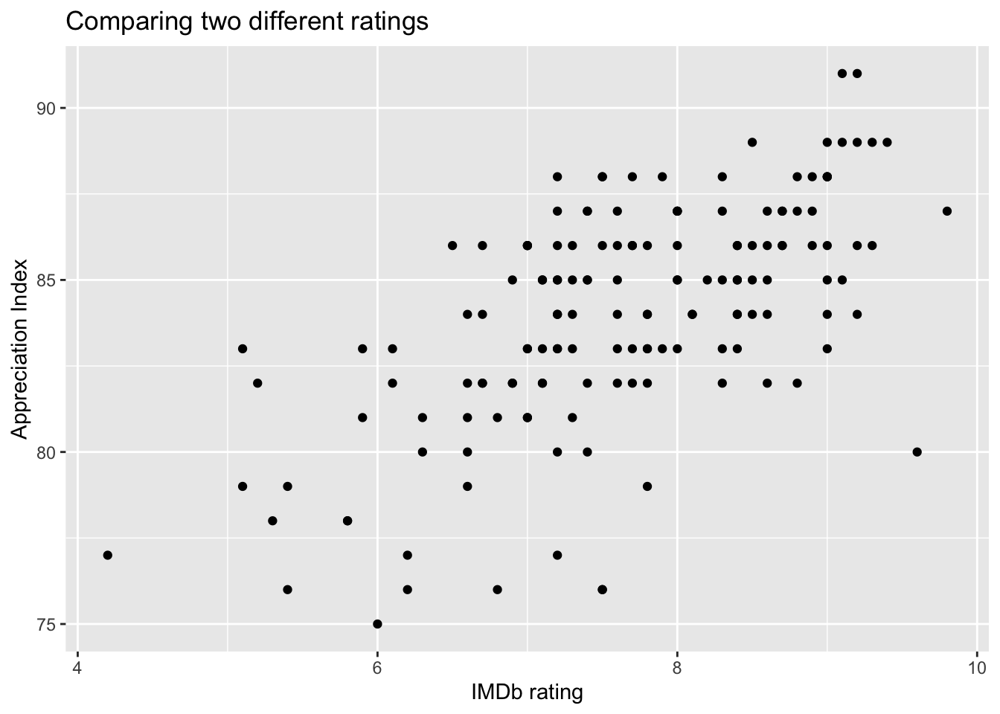

library(tidyverse) # ggplot, lubridate, dplyr, stringr, readr...
library(tidytext)
library(praise)
library(paletteer)
library(ggforce)
library(networkD3)
library(plotly)Dr. Who
The Data
The data this week comes from Wikipedia’s [List of Doctor Who episodes](https://en.wikipedia.org/wiki/List_of_Doctor_Who_episodes_(2005%E2%80%93present) via the {datardis} package by Jonathan Kitt.
directors <- read_csv("drwho_directors.csv")
episodes <- read_csv("drwho_episodes.csv")
writers <- read_csv("drwho_writers.csv")p <- episodes |>
left_join(writers, by = "story_number") |>
group_by(writer) |>
mutate(n_episodes = n()) |>
filter(n_episodes >= 5) |>
ggplot(aes(x = uk_viewers, y = rating, color = writer, label = episode_title)) +
geom_point() +
facet_wrap( ~ writer) +
ggthemes::scale_color_colorblind() +
guides(color="none") +
labs(x = "number of views, UK", y = "rating",
title = "Evaluting Dr. Who writers")
ggplotly(p, tooltip = c("episode_title"))It isn’t clear where the rating came from. Maybe IMDb? Let’s scrape the IMDb website to see if the ratings are the same as what was used in the original dataset.
library(rvest)
library(purrr)
scrape_imdb <- function(i){
imdb_rating <- paste0("https://www.imdb.com/title/tt0436992/episodes/?season=", i, sep = "") |>
read_html() |>
html_elements("span[aria-label^='IMDb']") |>
html_text2() |>
str_extract("[\\d\\.]+(?=/)") |>
as.numeric()
episode <- paste0("https://www.imdb.com/title/tt0436992/episodes/?season=", i, sep = "") |>
read_html() |>
html_nodes(xpath = "//div[@class='ipc-title__text']") |>
html_text2() |>
str_extract("[S\\d\\.E\\d]+(?=\\s)") |>
data.frame() |>
setNames("ep.seas") |>
mutate(season_number = as.numeric(str_extract(ep.seas, "\\d+")),
episode_number = as.numeric(str_extract(ep.seas, "(?<=E)\\d+")))
data.frame(imdb_rating, episode)
}
imdb_who <- 1:13 |>
map_dfr(scrape_imdb)episodes |>
left_join(imdb_who, by = c("season_number", "episode_number")) |>
ggplot(aes(x = imdb_rating, y = rating)) +
geom_point() +
labs(x = "IMDb rating", y = "TidyTuesday rating",
title = "Comparing two different ratings")
praise()[1] "You are mathematical!"